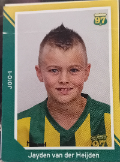

Hallo allemaal, mijn naam is Jayden van der Heijden. Ik ben 16 jaar oud en ik woon in Voorschoten samen met mijn ouders en met mijn 2 broertjes. Ik zit in klas A5A van het Vlietland College in Leiden. Mijn hobby's zijn voetbal, fitness en kickboksen, hieronder staat de link van mijn kickboksgevecht. Ik voetbal bij Voorschoten 97 JO17-1.
Hieronder zie je een foto van mij in mijn voetbalkleding toen ik 9 jaar oud was.
